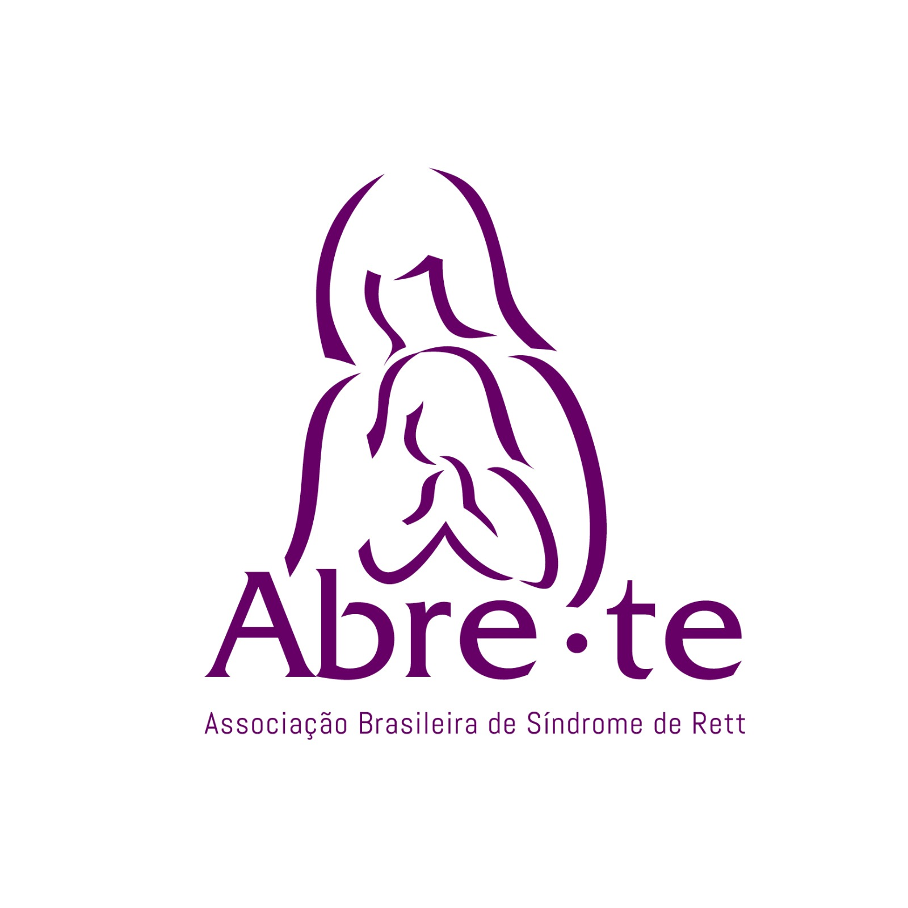

SOBRE A ABRETE.ORG
Isis e Claudio Riechelmann em 1988 após um ano à procura de um diagnóstico, conseguiram
encontrar informações e muito apoio ao entrarem em contato com Kathy Hunter, presidente
e fundadora da International Rett Syndrome Association – IRSA, em Washington, DC, EUA.
Se inspiraram e resolveram fundar a Associação Brasileira de Síndrome de Rett – ABRE-TE,
em 26 de Abril 1990. Os objetivos eram divulgar a síndrome, apoiar as famílias e incentivar
profissionais da saúde a estudarem e entenderem melhor a Síndrome de Rett. O Grupo promove
ações que são voltadas à promoção da saúde, aprendizagem e exercício da cidadania para
indivíduos com a Síndrome de Rett em todo o território nacional e à qualidade de vida
destas pessoas e de seus cuidadores. A equipe é composta por vários profissionais para
auxiliarem as famílias nesta jornada como geneticista, neuropediatra, psicólogo,
nutricionista, pedagogo, advogado, neuropsicopedagogo, entre outros. Contam também com
ajuda de líderes regionais para fornecer apoio às famílias.